C= 94.3325 pF/m
L= 274.7756 nH/m
Zo= 53.9708 Ohms


C= 76.4283
L= 145.5809 nH/m
Zo= 43.6441 Ohms


C= 47.6374 pF/m
L= 233.5667 nH/m
Zo= 70.0215 Ohms

C=59.1756 pF/m
L= 188.0251 nH/m
Zo= 56.3685 Ohms


Here are a number of examples of using atlc. Most of the example files can be found in the examples directory or if atlc is installed on the system, they will normally be located at /usr/local/share/atlc/examples. The very largest files, are not distributed to save disk space.
| Cross section | Properties | E-field | Ex field | Ey-field | Voltage | Energy | Permittivity |
|
multi-dielectric.bmp: C= 94.3325 pF/m L= 274.7756 nH/m Zo= 53.9708 Ohms |
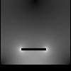 | 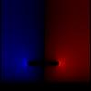 | 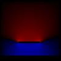 | |
||
|
ushape.bmp: C= 76.4283 L= 145.5809 nH/m Zo= 43.6441 Ohms |
|
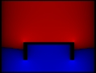 | 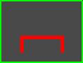 | |||
|
coax2.bmp: C= 47.6374 pF/m L= 233.5667 nH/m Zo= 70.0215 Ohms |
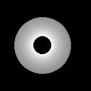 | 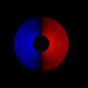 | 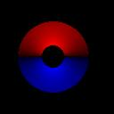 | 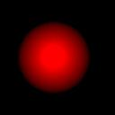 | 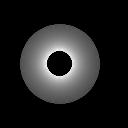 | 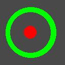 |
|
very-odd.bmp: C=59.1756 pF/m L= 188.0251 nH/m Zo= 56.3685 Ohms |
|
|
|
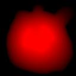 | 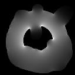 |
In the case of the open structures (such as microstrip or twin-wire cables) the electric field extends to infinity, as there is no surrounding conductor like in the case of the coax, u-shaped conductor of the very odd shape. By putting an open structure onto a finite grid, which does not extend to infintiy, we have introduced an error. You should check that the electric field in the file
of such structures is zero close to the edges - if not, a significant error will be introduced.
atlc is written and supported by Dr. David Kirkby (G8WRB) It it issued under the GNU General Public Licence


The following is a trap for smammers, so they can gather loads of ficticious email address, so don't click anywhere o n this line th anks.
{kind=link}